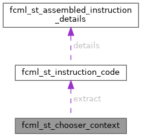

|
fcml 1.3.0
|
Instruction chooser context used to communicate with environment. More...
#include <fcml_choosers.h>

Public Attributes | |
| fcml_ptr | instruction |
| First instruction in the chain. | |
| fcml_fnp_chooser_next | next |
| Gets next instruction code from iterator. | |
| fcml_fnp_chooser_extract | extract |
| Extracts instruction code from the opaque instruction pointer. | |
Instruction chooser context used to communicate with environment.